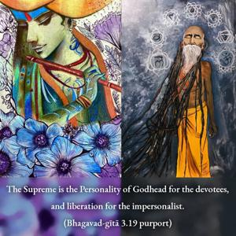

Therefore, without being attached to the fruits of activities, one should act as a matter of duty, for by working without attachment one attains the Supreme.

The Supreme is the Personality of Godhead for the devotees, and liberation for the impersonalist. A person, therefore, acting for Kṛṣṇa, or in Kṛṣṇa consciousness, under proper guidance and without attachment to the result of the work, is certainly making progress toward the supreme goal of life. Arjuna is told that he should fight in the Battle of Kurukṣetra for the interest of Kṛṣṇa because Kṛṣṇa wanted him to fight. To be a good man or a nonviolent man is a personal attachment, but to act on behalf of the Supreme is to act without attachment for the result. That is perfect action of the highest degree, recommended by the Supreme Personality of Godhead, Śrī Kṛṣṇa.
Vedic rituals, like prescribed sacrifices, are performed for purification of impious activities that were performed in the field of sense gratification. But action in Kṛṣṇa consciousness is transcendental to the reactions of good or evil work. A Kṛṣṇa conscious person has no attachment for the result but acts on behalf of Kṛṣṇa alone. He engages in all kinds of activities, but is completely nonattached.